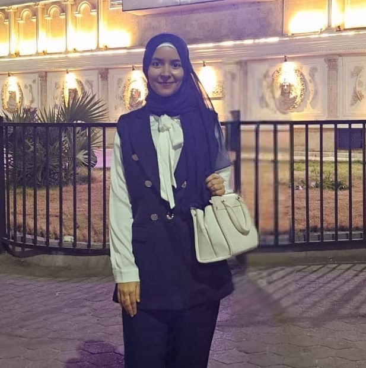

Detail-oriented Data Scientist & senior Computing and Data Science student at Alexandria University. Strong foundation in Machine Learning, Feature Engineering, Statistical Analysis, and Data Analytics using Python & SQL. Experienced in building and evaluating predictive models for real-world problems.

July 2026 – Present
Participating in an intensive Machine Learning Engineer internship program. Developing practical knowledge and skills in ML and related technologies through hands-on training.
July 2025 – September 2025
Completed practical Data Science training focused on data analysis, preprocessing, feature engineering, and Machine Learning. Developed and evaluated ML models through hands-on projects.